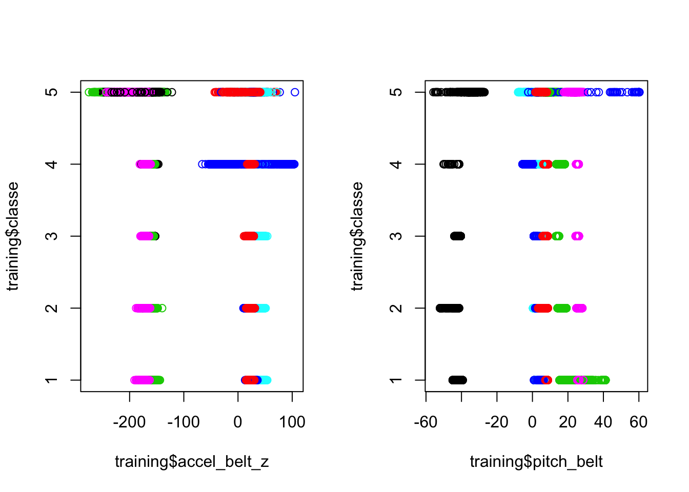
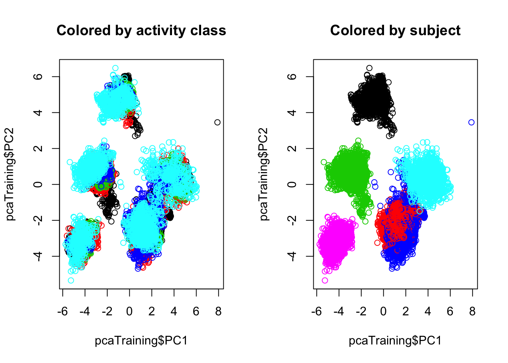
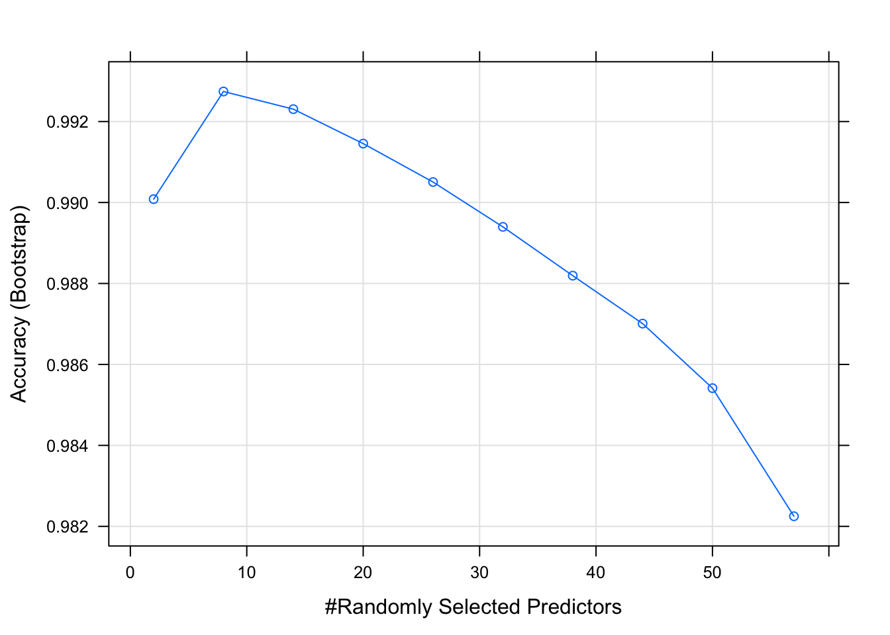

if(!file.exists("pml-training.csv")) {
download.file("https://d396qusza40orc.cloudfront.net/predmachlearn/pml-training.csv", "pml-training.csv")
}
trainingRaw <- read.csv("pml-training.csv")The data represent readings taken from Human Activity Recognition (HAR) devices during the execution of five different weightlifting motions, classified as A, B, C, D, or E. (Data published at http://web.archive.org/web/20161224072740/http:/groupware.les.inf.puc-rio.br/har.) The motions were executed by six different subjects in 858 different instances (labeled as “windows”). Each window consists of up to 38 snapshots of readings from different HAR devices. A single observation in the data table consists of one snapshot. The task is to be able to identify the motion being performed from a single snapshot.
The 160 variables recorded include the subject name, the activity class, 6 variables for labeling, including timestamp and windows. The rest consist of instrumental readings at each snapshot and a series of per-window data aggregates.
Because the goal is to identify from a single snapshot, the aggregate data was removed. Labels and timestamps were removed as irrelevant to the outcome; window number is a perfect predictor of activity class but was removed in the spirit of the exercise.
colsToEliminate <- c(1, 3:7, grep("^(kurtosis|skewness|max|min|amplitude|avg|stddev|var)",colnames(trainingRaw)))
trainingStreamlined <- trainingRaw[, -colsToEliminate]A validation set was split off from the training set.
suppressMessages(library(dplyr))
suppressMessages(library(caret))
set.seed(121212)
trainIndex <- createDataPartition(trainingStreamlined$classe, p = .8, list = FALSE, times = 1)
training = trainingStreamlined[trainIndex,]
validation = trainingStreamlined[-trainIndex,]Certain variables seem correlated with class but also vary strongly according to the experimental subject performing the movement (column “user_name”).
par(mfrow=c(1,2))
plot(training$accel_belt_z, training$classe, col = training$user_name)
plot(training$pitch_belt, training$classe, col = training$user_name)
In fact, a quick primary component analysis displays a slight amount of separation for some activity classes but a much more dramatic separation by subject. Clearly this dataset is very subject-specific.
pca <- preProcess(training, method=c("pca","nzv"))
pcaTraining<-predict(pca, newdata = training)par(mfrow=c(1,2))
plot(pcaTraining$PC1, pcaTraining$PC2, col = training$classe, main="Colored by activity class")
plot(pcaTraining$PC1, pcaTraining$PC2, col = training$user_name, main="Colored by subject")
To show the effect of subject on the data note the difference between a random partition of the entire training data set, optimized on maximum tree depth and yielding an in-sample accuracy of 72%:
ctrl1 <- trainControl(method="repeatedcv", number = 10, repeats = 5, classProbs = TRUE)
set.seed(343434)
modelGeneralRpart2<-train(classe ~ ., data = training, method="rpart2", trControl = ctrl1, tuneLength = 20)
modelGeneralRpart2$bestTune[["maxdepth"]]## [1] 24(confusionMatrix(predict(modelGeneralRpart2), training$classe))[["overall"]][["Accuracy"]]## [1] 0.7215109… contrasted with the accuracy of six separate models created by the same method on the training data split by subject, which result in an in-sample accuracy of 92%.
rpart2PerSubject <- function(x) {
trainingSubset <- training[training$user_name == x,]
modelSpecificRpart2 <- train(classe ~ ., data = trainingSubset, method="rpart2", trControl = ctrl1, tuneLength = 20)
list(maxdepth = modelSpecificRpart2$bestTune[["maxdepth"]],
accuracy = (confusionMatrix(predict(modelSpecificRpart2), trainingSubset$classe))[["overall"]][["Accuracy"]],
samplesize = nrow(trainingSubset))
}
# In-sample accuracy for each subject-specific tree
set.seed(565656)
specificModelData <- suppressMessages(sapply(levels(training$user_name), rpart2PerSubject))## note: only 18 possible values of the max tree depth from the initial fit.
## Truncating the grid to 18 .
##
## note: only 19 possible values of the max tree depth from the initial fit.
## Truncating the grid to 19 .
##
## note: only 11 possible values of the max tree depth from the initial fit.
## Truncating the grid to 11 .
##
## note: only 18 possible values of the max tree depth from the initial fit.
## Truncating the grid to 18 .
##
## note: only 18 possible values of the max tree depth from the initial fit.
## Truncating the grid to 18 .
##
## note: only 18 possible values of the max tree depth from the initial fit.
## Truncating the grid to 18 .specificModelData## adelmo carlitos charles eurico jeremy pedro
## maxdepth 13 14 5 14 17 15
## accuracy 0.9175024 0.9210421 0.960452 0.9115479 0.8949672 0.9213162
## samplesize 3091 2495 2832 2442 2742 2097# Weighted in-sample accuracy over the entire training set
weightedAccuracy <- (sapply(1:6, function(x) {l<-specificModelData[, x]; l[["accuracy"]] * l[["samplesize"]]}) %>% sum()) / nrow(training)
weightedAccuracy## [1] 0.92146This model might be selected for maximum interpretability but would be impossible to apply to new users.
For maximum accuracy, a random forest model, though time-consuming, proved to be the best choice and did not require the data to be split by subject. The final model achieved a 100% in-sample accuracy and an out-of-sample accuracy (against the validation set) of over 99.5%.
set.seed(787878)
fitRf <- train(classe ~ ., data = training, method="rf", tuneLength = 10)
# In-sample accuracy
confusionMatrix(predict(fitRf), training$classe)[["overall"]][["Accuracy"]]## [1] 1# Out-of-sample accuracy
confusionMatrix(predict(fitRf, newdata = validation), validation$classe)[["overall"]][["Accuracy"]]## [1] 0.9959215# Best value for mtry, as determined by caret
fitRf$bestTune[["mtry"]]## [1] 8plot(fitRf)
Caret tested 10 values of mtry, using the caret default of 25-fold resampling, to determine the best model fit for random forest and arrived at 8, close to the default value of sqrt(number of predictors) provided for classification problems by the randomForest library. However, the final fit cannot be called universally applicable until tested against device readings from users other than the six subjects of this study.
R code to download the final test set and run the prediction using the random forest model is shown but not evaluated.
if(!file.exists("pml-testing.csv")) {
download.file("https://d396qusza40orc.cloudfront.net/predmachlearn/pml-testing.csv", "pml-testing.csv")
}
testingRaw <- read.csv("pml-testing.csv")
testingResults <- predict(fitRf, newdata = testingRaw)
testingResults